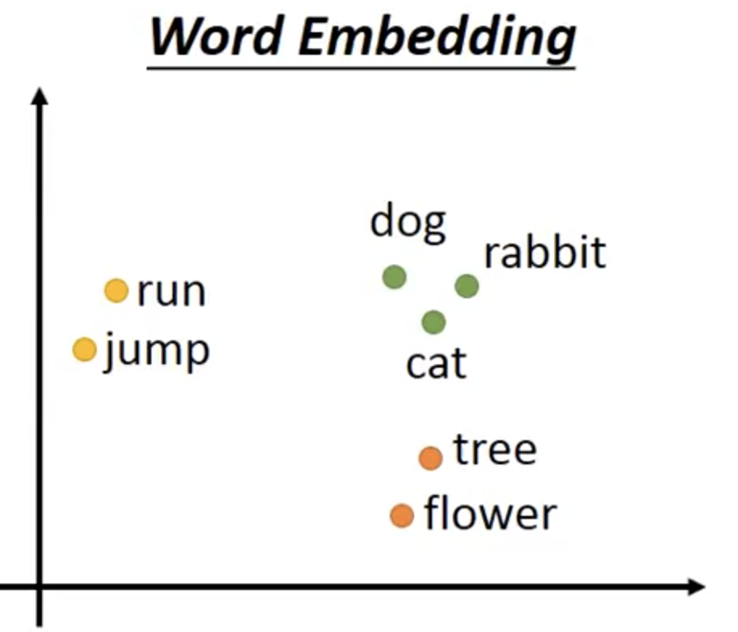
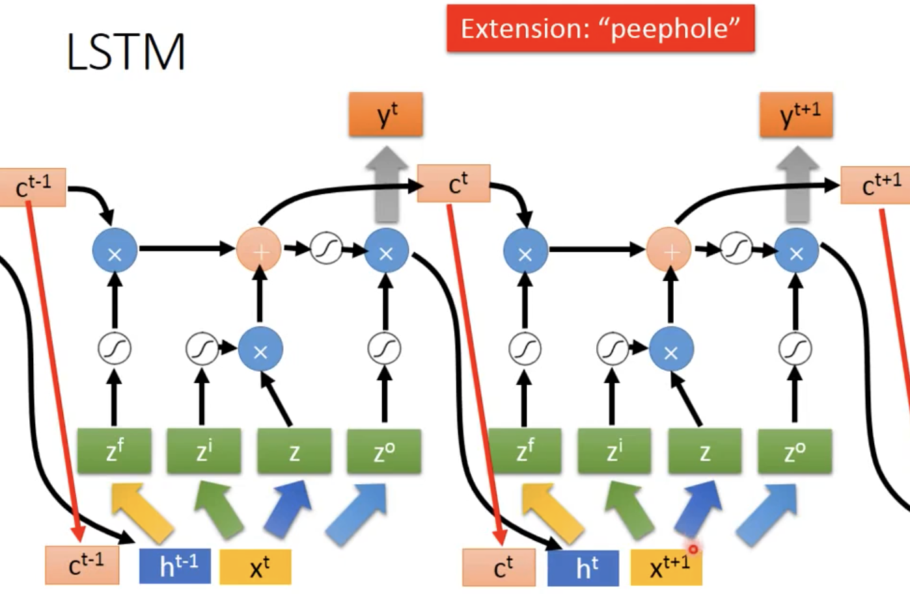
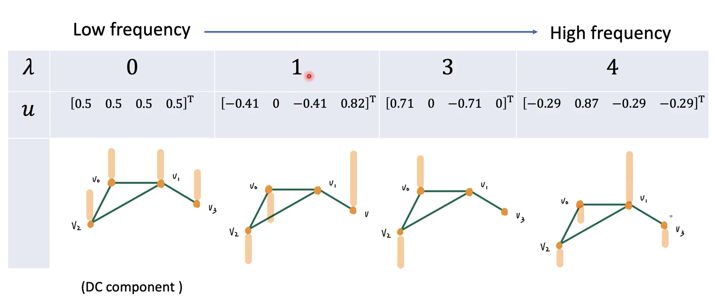
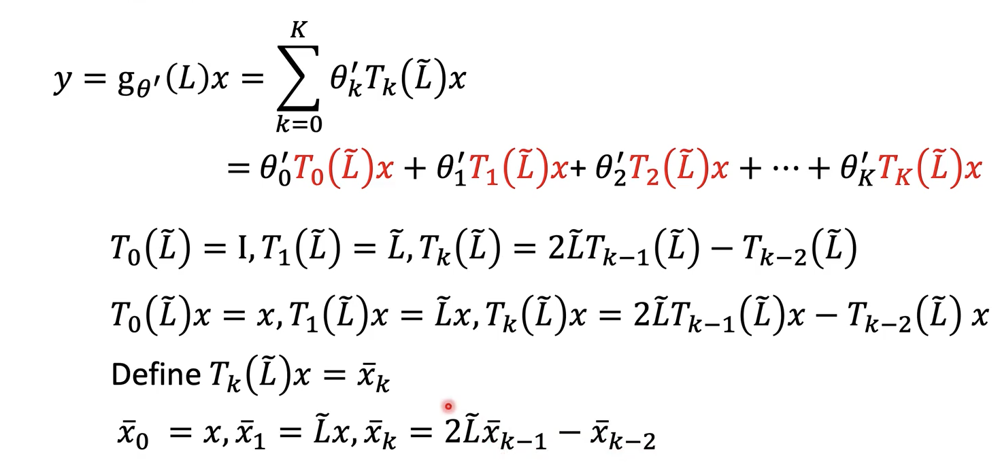

机器学习 by 李宏毅(5)
Unsupervised Learning --- Word Embedding
World Class : 对 word vector 进行聚类
Word Embedding：将每一个word project 到 High dimensional space 中，使得含义相近的 word 在空间的距离相近，且不同的dimension 代表不同的含义

Machine learn the meaning of word by reading lots of documents without supervison
Generateing Word Vector is unsupervised. （unkown what to output）
A word can be understood by its context
- E.g： 相同的句式中的词大概率有相同的词性
How to exploit the context?
Count based: If two words \(w_i\) and \(w_j\) frequently co-occur, \(V(w_i)\)and \(V(w_j)\)would be close to each other
- E.g. Glove Vector
Prediction-based
train a model
\(W_i\) as Inout, \(W_j\) as output
Take out the first input Z of hidden layer, Use Z present a word
E.g : Training Text: (1) \(W_{i,1} W_j\) (2) \(W_{i,2} W_j\)
if Model(\(W_{i,1}\)) = Model(\(W_{j,2}\)) => \(W_{i,1}\) 与 \(W_{i,2}\) 属于一类
对其扩展，输入多个\(W_i\)作为参数，需要进行 Sharing Parameters。将word vector flatten 后，相同维度的输入共享参数
The length of \(X_{i-1}\) and \(X_{i-2}\) are both |V|. The length of z is |Z|
\[ Z = W_1X_{i-2} + W_2X_{i-1} \]
The weight matrix \(W_1\) and \(W_2\) are both |Z| X |V| matrices
\[ W_1 = W_2 = W \ \ \ \ => \ \ \ \ z=W(X_{i-2}+X_{i-1}) \]
如何保证在 train 的过程中 W矩阵一致？
Training Process

Various Architectures
Multi-lingual Embedding: 额外train model进行 transform，transform的在dimension space的位置应该与原语言的词汇一致
Document Embedding ( document to Bag-of-Word )
word sequences with different lengths -> the vector with the same length
The vector representing the meaning of the word Sequence
A word sequence can be a document or a paragraph
Beyond Bag of Word: 要理解一个词序的含义，不能忽视词的顺序。
Spatial Transformer Layer
对 input image 进行旋转缩放，使其具有不变性
- CNN is not invariant to scaling and rotation
- 还可以 transform CNN 的 feature map
How to transform an image/feature map
E.g 对图像进行平移只需要改变 W 参数矩阵
Train 一个NN，使Layer l-1 变为 Layer l
线性代数中用变换矩阵可以进行图像的变换
- 缩放
- 旋转
在NN中只需要6个参数就可以实现平移和旋转
x，y 为value的下标，在旋转时会出现问题，如果四舍五入x，y，导致小的变化得到结果不变，所以微分为0，无法梯度下降。
进行 Interpolation
Spacial Transformer 将Input 进行变换为CNN可以识别的图像
Recurrent Neural Network
Store the older value in the memory
- Elman Network

- Jordan Network, 可以清楚放入memory的是什么
- Bidirection RNN，双向，根据整个input 输出 y
Long Short-term Memory
引入3个gate：forget gate，input gate，output gate
LSTM的参数量是一般NN的4倍

Gragh Neural Network
Introduction
Gragh: Node + edge (interaction)
GNN: Gragh as Input, let NN know the structure of Gragh
Application:
- Classification
-
- Identity analysis：根据人物关系分析凶手
- Generation
- 化学分子生成：输入 noise + y
Data have underlying structure and relationship
Question
- How do we utilize the structures and relationship to help our model?
- What if the graph is larger, like 20k nodes?
- What if we don t have the all the labels?
- E.g 利用相邻节点
- How to embed node into a feature space using convolution?
- Solution 1 Generalize the concept of convolution (correlation) to graph >> Spatial-based convolution
- Solution 2 Back to the definition of convolution in signal processing >> Spectral-based convolution
embed node into a feature space using convolution
Tasks, Dataset, and Benchmark
Tasks + semi-supervised node classification + Regression + Graph classification + Graph representation learning + Link prediction
Common dataset
- CORA: citation network. 2.7k nodes and 5.4k links
- TU-MUTAG: 188 molecules with 18 nodes on average
Spatial-based GNN
Convolution:
Aggregate: How to update the hidden state of next layer with neighbor feature
Readout: collect all node feature to represent the graph
- NN4G (Neural Network for Gragh)
- Input layer : Inout gragh node \(V_i\), node feature \(X_i\)
- Hidden layer 0: 对 node feature \(X_i\) 进行 embedding （Embedding matrix）
- Hidden Layer1：aggregate
- Readout : each layer node feature 加起来
- DCNN ( Diffusion-Convolution Neural Network )
- 将距离v3节点距离为1的 feature 相加再取平均
- 将距离v3节点距离为2的 feature 相加再取平均
- 分别将每层的节点的feature拼接矩阵H
- transform之后输出 y
- MoNET（Mixture Model Networks）
- Define a measure on node distances
- Use weighted sum (mean)instead of simply summing up(averaging neighbor features
- GAN（Gragh Attention Network）常用
- 对 neighbor node 进行 attention
- f means feature、e means energy
- GIN（Gragh Isomorphism Network）
- A GNN can be at most as powerful as WL isomorphic test
- Theoretical proofs were provided
- mean or max pooling will fail

Gragh Signal Processing and Spectral-based GNN
对Graph和Filter进行Transform到 Fourier domain 中做 Multiplication，得到结果再inverse Transform，实现Convolution
- Fourier transform
- Spectual Graph Theory：
adjacency matrix 表示相连节点的权值，degree matrix (对角阵) 表示每个节点有几个邻居
U 为 eigen vector, \(\lambda\) 代表eigen value
Example:

频率越大，相邻点的变化量越大.
Lf 的第i个element表示：\(V_i\) 的 frequency 分别与 neighbor node 的frequency差的总和 \[ Lf(v_i) = \sum_{v_j\in V} w_{i,j}(f(v_i)-f(v_j)), where\ w_{i,j}\ is\ the\ (i,j)^{th}\ entry\ of\ A \] 所以"Power" of signal variation between nodes i.e smoothness of graph signal \[ f^TLf=f^T \sum_{v_j\in V} w_{i,j}(f(v_i)-f(v_j))=\sum_{v_i \in V}f(v_i)\sum_{v_j\in V} w_{i,j}(f(v_i)-f(v_j)) \]
\[ =\sum_{v_i \in V}\sum_{v_j\in V}w_{i,j}(f^2(v_i)-f(v_i)f(v_j)) \]
\[ =\frac{1}{2}\{ \sum_{v_i \in V}\sum_{v_j\in V}w_{i,j}(f^2(v_i)-f(v_i)f(v_j))+\sum_{v_i \in V}\sum_{v_j\in V}w_{i,j}(f^2(v_j)-f(v_j)f(v_i))\} \]
\[ =\frac{1}{2}\sum_{v_i \in V}\sum_{v_j\in V}w_{i,j}(f(v_i)-f(v_j))^2 \]
\[f^T Lf\] represents "power" of signal variation between nodes
 \[
Thus,let\space u_i = f,\space \space Then \space \space u_i^TLu_i = u_i^T\lambda_i u_i = \lambda_i
\] small \(\lambda\) means the low-pass part of a graph signal, \(u_i\) means the frequency
\[
Thus,let\space u_i = f,\space \space Then \space \space u_i^TLu_i = u_i^T\lambda_i u_i = \lambda_i
\] small \(\lambda\) means the low-pass part of a graph signal, \(u_i\) means the frequency
例如：如图一个直线graph
How to tansform？
\(\hat x\) 表示\(x\)在不同频率成分\(\lambda\) 上的大小
Inverse Graph Fourier Transform of signal \(\hat x: x=U\hat x\)
Filtering
modifying the amplitude/ phase of the different frequency components in a signal, including eliminating some frequency components entirely
Filter in img --- Impulse response
E.g , Convolution in time domain is multiplication in frequency domain
\(\hat y\) in spectual domain need to de transformed to vertex domain y \[ y = U\hat y = Ug_\theta (\wedge) \hat x = U g_\theta(\wedge)U^Tx=g_\theta(U\wedge U^T)x \]
\[ Let, \space \space L = U\wedge U^T \]
\[ y = g_\theta(L)x \]
\[ where, \space g_\theta(·)\space can\space be\space any\space function, \]
\[ for\space example, g_\theta (L) = log(1+L)=L-\frac{L^2}{2}+\frac{L^3}{3}...,\lambda_{max}<1 \]
Problems :
\(\theta_i\) is the parameters to be learned, the number of \(\theta\) depends on the number of nodes. Learning complexity is O(N)
\(g_\theta (·)\) is not localization,
ChebNet
Solution to problem 1 and 2:
- use polynomial to parameterize \(g_\theta (L)\)
Solution to problem 3:
Use a polynomial function that can be computed recursively (递归) from L
Chebyshev polynomial: \(T_0(x) = 1, T_1(x)=x,T_k(x) = 2xT_{k-1}(x)-T_{k-2}(x), x\in[-1,1]\)
\[ T_0(\tilde \wedge) = I, T_1(\tilde \wedge)=x,T_k(\tilde \wedge) = 2\tilde \wedge T_{k-1}(\tilde \wedge )-T_{k-2}(\tilde \wedge) \]
\[ where \space \tilde \wedge =\frac{2\wedge}{\lambda_{max}}-I,\space \tilde \wedge \in [-1,1], \space I=indentity \space matrix \]

GCN （常用）
\(\tilde \space\) means self-loop
Benchmark tasks
- Graph Classification: SuperPixel MNIST and CIFAR10
- Regression ZINC molecule graphs dataset
- Node classification: Stochastic Block Model dataset
- graph pattern recognition and semi-supervised graph clustering
- Edge classification: Traveling Salesman Problem